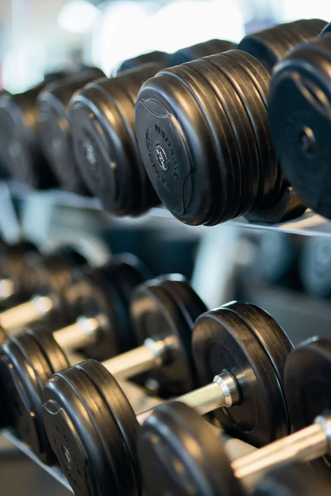
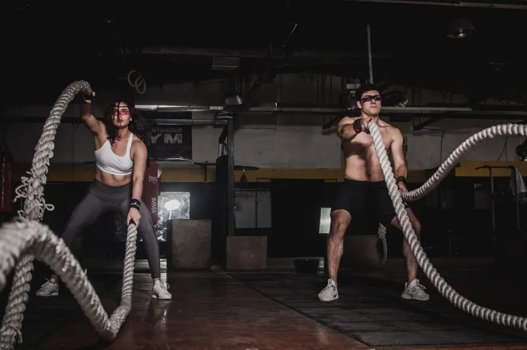

MOVE WITH PURPOSE
Workout Plans
Simple routines for every fitness level. Start where you are and grow from there.
0workouts completed
🔥 Keep showing up—consistency creates progress.
CHOOSE YOUR LEVEL
Follow a complete weekly plan
Choose the level that matches your experience. Always use good form and rest when your body needs it.

BEGINNER • 4 WEEKSFull-Body Foundation
Learn basic movement patterns, build confidence, and create a consistent routine.
📅 3 days/week⏱ 30–40 min😌 60–90 sec rest
DAY 1Full Body A
- Bodyweight Squat3 sets × 12 reps
- Incline Push-up3 × 8–10
- Dumbbell Row3 × 10 each side
- Glute Bridge3 × 15
- Plank3 × 20 sec
DAY 2Cardio & Core
- Brisk Walk15 minutes
- Step-ups3 × 10 each leg
- Bird Dog3 × 10 each side
- Dead Bug3 × 10
- Side Plank2 × 15 sec each
DAY 3Full Body B
- Goblet Squat3 × 10
- Dumbbell Press3 × 10
- Lat Pulldown3 × 10
- Reverse Lunge2 × 8 each leg
- Farmer Carry3 × 30 sec

ADVANCED • 8 WEEKSPush, Pull & Legs
High-volume training for experienced lifters with sound technique and recovery habits.
📅 5 days/week⏱ 60–75 min😌 90–180 sec rest
DAY 1Push Strength
- Bench Press5 × 5
- Overhead Press4 × 6
- Weighted Dip3 × 8
- Lateral Raise4 × 15
- Triceps Extension3 × 12
DAY 2Pull Strength
- Deadlift4 × 4
- Weighted Pull-up4 × 6
- Barbell Row4 × 8
- Rear Delt Fly3 × 15
- Hammer Curl3 × 10
DAY 3Leg Strength
- Back Squat5 × 5
- Romanian Deadlift4 × 8
- Bulgarian Split Squat3 × 10 each
- Leg Curl4 × 12
- Calf Raise4 × 15
DAY 4Upper Hypertrophy
- Incline Press4 × 10
- Cable Row4 × 10
- Chest Fly3 × 15
- Lat Pulldown3 × 12
- Arm Superset3 × 12 each
DAY 5Legs & Conditioning
- Front Squat4 × 8
- Hip Thrust4 × 10
- Walking Lunge3 × 12 each
- Sled Push6 × 20 m
- Core Circuit3 rounds
🔥Warm up
Spend 5–10 minutes raising your heart rate and practising the movements with light weight.
📈Progress gradually
Add a small amount of weight or one repetition only when your current sets feel controlled.
🛌Recover well
Leave rest days between hard sessions and support training with sleep, fluids, and balanced meals.
Safety: Stop if you feel sharp pain, dizziness, or unusual shortness of breath. Beginners should ask a qualified trainer to check exercise technique.